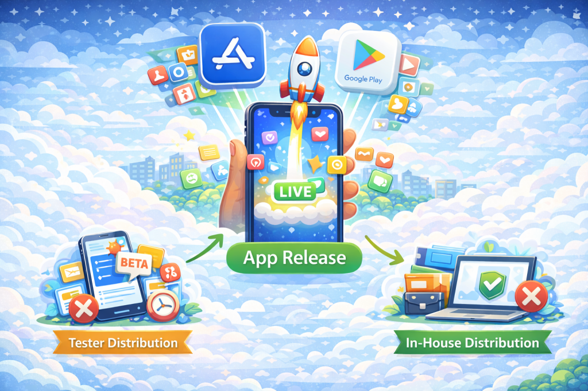
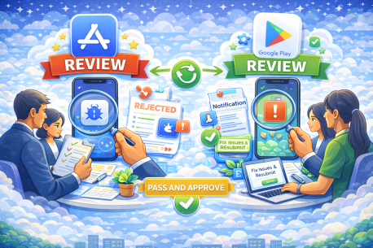

What Is App Release?

App release, also referred to as public app distribution, is the process of making a mobile application publicly available to end users through an official app store. Once an application is released, it can be discovered, downloaded, and installed by anyone through platforms such as the Apple App Store or Google Play. Public app release typically follows a formal submission and review process defined by the app store.
App Release vs Tester Distribution vs In-House Distribution
App release differs fundamentally from other distribution models in terms of audience, access, and intent. App release makes an application publicly accessible to all users through an app store. Tester distribution delivers pre-release builds to a limited group of internal or external testers for validation and feedback. In-house distribution is used to deliver internal applications privately to employees, partners, or contractors without public exposure.
Why App Release Matters
App release represents the final stage of the mobile application lifecycle, where an application transitions from development and validation into real-world use. At this stage, the application becomes visible to end users and is subject to public ratings, reviews, and platform policies. A well-managed app release is critical for user trust, discoverability, and long-term product success.
TL;DR: App release is the process of publishing a mobile application to an app store for public access, making it available to end users after development, testing, and internal validation are complete.
Public App Distribution Channels
Public app distribution is carried out through official app stores operated by platform providers. These channels control application visibility, distribution, updates, and compliance through formal submission and review processes. The primary public distribution channels include:
- Apple App Store, Apple’s official app marketplace for iOS and iPadOS applications. Apps distributed through the App Store must comply with Apple’s App Store Review Guidelines and are reviewed before becoming publicly available.
- Google Play, Google’s official distribution platform for Android applications. Google Play provides public app discovery, staged rollouts, update management, and policy enforcement through the Play Console.
- Huawei AppGallery, Huawei’s official app distribution platform, primarily used in regions where Google Play services are not available. AppGallery has its own submission, review, and compliance requirements.
Unlike tester distribution or in-house distribution, public app distribution channels make applications discoverable to all users and subject them to platform-level review, policy enforcement, and public feedback.
App Release Workflow
Public app release follows a structured workflow designed to ensure quality, compliance, and visibility across app stores. While exact steps may vary by platform, the overall process typically includes the following stages:
- Build a release binary, a production-ready binary is generated for release, such as an .ipa file for iOS or an .aab or .apk file for Android.
- Signing and versioning, the application is signed with the appropriate distribution credentials, and a clear versioning strategy is applied to identify the release uniquely across updates.
- Store metadata preparation, app store metadata is prepared, including the app name, description, screenshots, icons, privacy disclosures, and other information required for store listing and review.
- Submission to the app store, the release is submitted to the relevant app store, such as the Apple App Store or Google Play, either manually or through an automated release workflow.
- App review, submitted applications go through a review process in which the app store evaluates functionality, security, content, and policy compliance before public availability.
- Approval, if the application meets the platform’s guidelines, it is approved for release. If issues are found, the submission may be rejected and require changes before resubmission.
- Release and rollout, once approved, the application can be released to all users immediately or rolled out gradually using phased or staged release options.
How App Store Review and Approval Works

Before an application can be publicly released, it must pass the review and approval process defined by each app store. These reviews are designed to ensure apps meet platform requirements related to security, privacy, functionality, and content.
Apple App Store Review
Apps submitted to the Apple App Store are reviewed according to Apple’s App Store Review Guidelines. Apple evaluates applications for technical stability, user experience, content compliance, and privacy practices.
- Review times typically range from one to two days, though complex submissions may take longer.
- If an app is rejected, Apple provides detailed feedback explaining the reason for rejection.
- Developers can address the issues and resubmit the app for another review.
Check here for official Apple review guidelines.
Google Play Review
Apps published to Google Play go through a review process that checks compliance with Google Play policies, including content rules, security requirements, and data usage disclosures.
- Reviews are performed after submission through the Google Play Console.
- If issues are identified, developers receive a notification explaining what needs to be fixed.
- Once approved, the app can be published automatically or released according to the configured rollout strategy.
Google Play review timelines can vary and may take several days, especially for new developer accounts or apps with sensitive permissions.
Check here for official Google Play review policies.
Best Practices for App Store Releases
A well-managed app store release reduces rejection risk, improves release reliability, and ensures a smoother experience for end users. Common best practices include:
- Proper signing and re-signing management, ensure release builds are signed with the correct distribution certificates and profiles. Misconfigured signing is a frequent cause of submission failures and last-minute delays.
- Clear version and build number strategy, use consistent versioning and increment build numbers correctly for each submission. This helps track releases, manage rollbacks, and avoid app store submission errors.
- Thorough pre-release validation, validate release builds through tester distribution or internal testing before submission to catch critical issues early and reduce rejection risk.
- Accurate and complete store metadata, prepare app descriptions, screenshots, icons, and privacy disclosures carefully. Incomplete or misleading metadata is a common reason for review rejection.
- Phased or staged rollouts, use phased releases where supported to gradually expose new versions to users, monitor stability, and limit the impact of potential issues.
- Post-release monitoring and response, monitor crashes, user feedback, and store reviews immediately after release to identify and address issues quickly.
- Automated release workflows using CI/CD, automating build, signing, and submission steps reduces manual errors and improves consistency across releases. Some teams integrate app store releases into CI or mobile delivery workflows using platforms such as Appcircle or Fastlane as part of their release process.